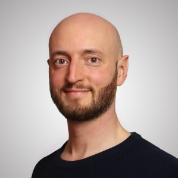
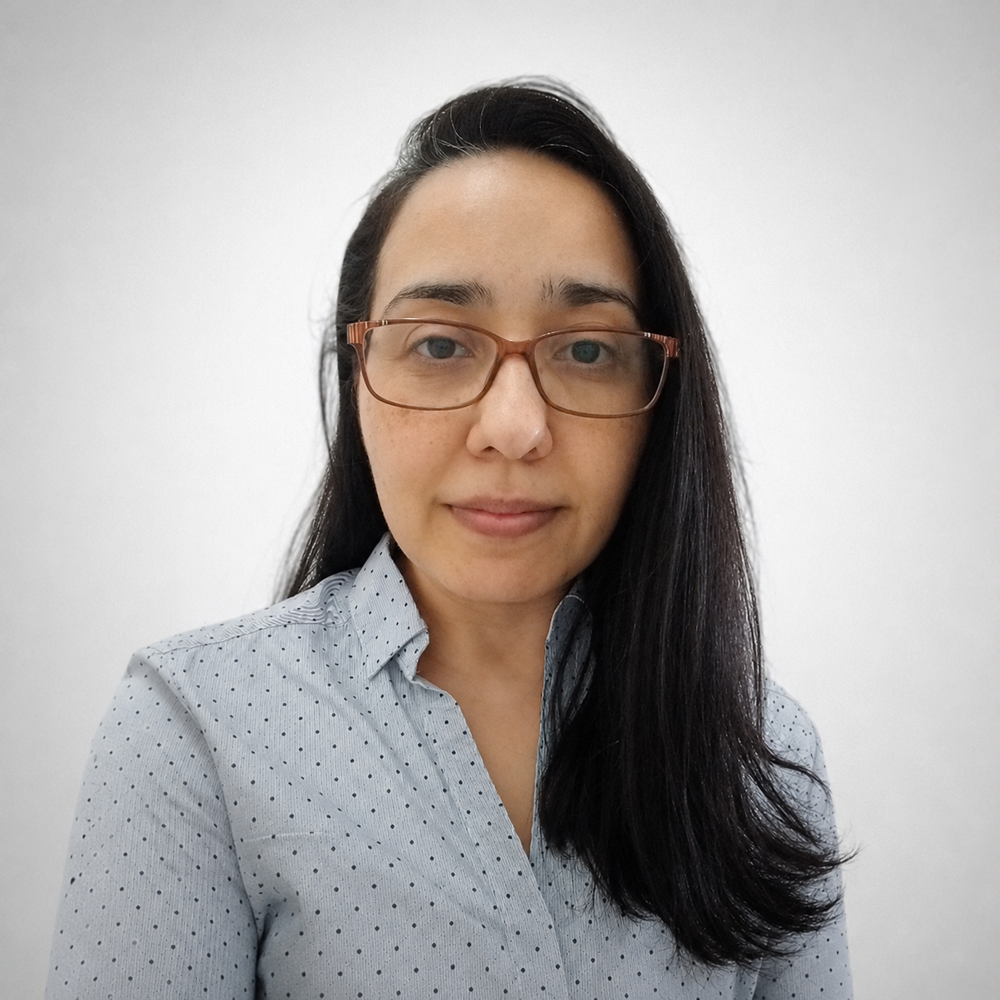
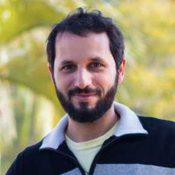
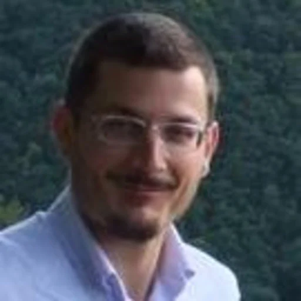

Join the team
We are building a talented team of researchers and students to work on transport phenomena in materials science and engineering, and to structure the lab group itself. If you are interested in joining our team check our Lab manual for more information, or reach out to us directly.
Team members
Meet the students and researchers who make TPMaT possible:
Murilo Henrique Moreira (he/him)
- PI / Professor
- Federal University of São Carlos, Brazil
- Email: murilo.moreira@ufscar.br
- ORCID: 0000-0002-2591-4760
- Website: murilohmoreira.github.io/

Collaborators
Meet some of the outstanding colleagues that we are fortunate to collaborate with around the world:
Alessandro Tengattini (he/him)
- Professor
- Université Grenoble Alpes, France | Institut Laue-Langevin, France
- ORCID: 0000-0003-0320-3340

Ana Paula da Luz (she/her)
- Professor
- Federal University of São Carlos, Brazil
- ORCID: 0000-0002-5941-5388

Roberto Federico Ausas (he/him)
- Professor
- Universidade de São Paulo, Brazil
- ORCID: 0000-0002-5318-3133


The background of this page
is inspired by an evolving network graph representing the formation of new collaborations.